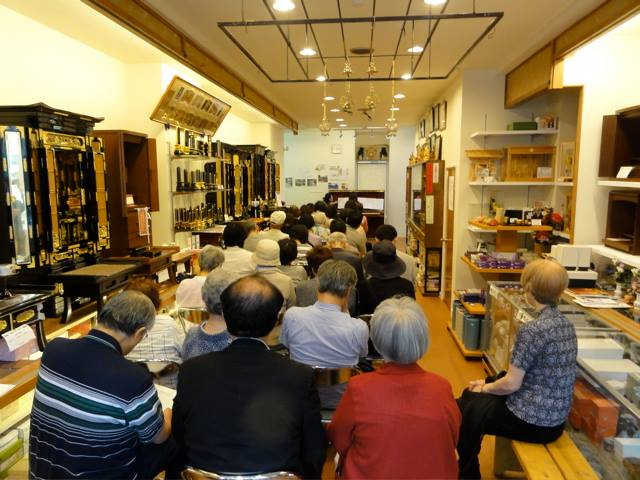

音楽と文化

店舗でのコンサートや、他の施設でのコンサート企画、その他のイベントを開催しています。
イベント情報はこちら ⇒ 
- 「山口昌男氏の（仮設）書物の神話学」展会場計画レポート
- 小樽市立文学館報(23). pp.16-19。2001(平成13)年
- リンク ->「山口昌男氏の（仮設）書物の神話学」展会場計画レポート
- 一原有徳／新世紀へ（爽快なリズムの建築）
- 市立小樽文学館・市立小樽美術館. pp.60-63。2001(平成13)年
- 都市の風景、あるいは明日のためのオープンスペース
- 小樽市立文学館報(30)、pp.1, 12-14. 2007(平成19)年
- リンク -> 都市の風景、あるいは明日のためのオープンスペース
- 五稜郭にみる日本文化と近代都市計画の邂逅
- 季刊『日本主義』No. 5. 春号、pp.62-69. 白陽社. 2009(平成21年)
- Open Spaces of Traditional Societies
- Journal of Landscape Architecture in Asia. Vol. 2. pp.39-44. 2006(平成18)年 建築家・三ッ江匡弘氏との共著。全日本冠婚葬祭互助協会助成研究 私のランドスケープデザイン活動の方向を決定づけた原点の研究です
- リンク -> Open Spaces of Traditional Societies
- 道内の交通街づくりにおける行政と市民活動の関係：地方鉄道存続活動の場合
- 北海道生涯学習研究(北海道教育大学生涯学習研究センター紀要). vol. 7. pp.103-113. 2007(平成19)年 武田泉氏、森久保夏樹氏との共著
- Shaping Experience in Landscape and Soundscape Design
- Journal of the Graduate School of Letters. Vol. 2. pp.75-87. Hokkaido University. 2007(平成19)年
- リンク -> Shaping Experience in Landscape and Soundscape Design
- 風景研究における実践論的アプローチ
- 北海道大学大学院文学研究科研究論集. vol. 7. pp.1-20. 2007(平成19)年
- 創られゆく風景：北海道のランドスケープデザインにおける政治性と実践
- 北方人文研究. Vol. 1. pp.69-85. 北海道大学大学院文学研究科北方研究教育センター. 2008(平成20年)
- リンク -> 創られゆく風景：北海道のランドスケープデザインにおける政治性と実践
- ランドスケープデザインを文化の過程として研究する
- 形の文化研究. Vol. 4. pp.37-47. (形の文化会学会誌) 2008(平成20年)
- リンク -> ランドスケープデザインを文化の過程として研究する
- 創られゆくあいまいな風景：民族誌的実践からのサウンドスケープデザイン再考
- 形の文化研究. Vol. 5. pp.1-14. (形の文化会学会誌) 2009(平成21年)